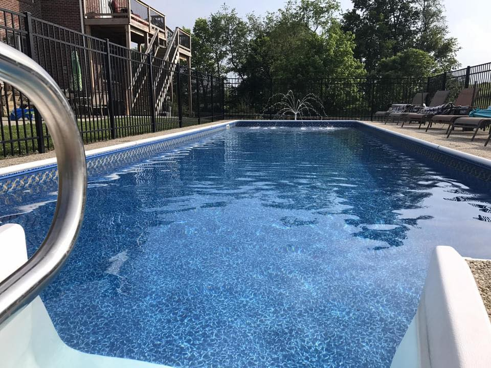

Home
Professional
My Library
What am I reading?
Contact
|
Whitney D. Sosbe
What am I reading?
This summer, you can find me reading by our swimming pool and focused on the 2023-2024 Kentucky Bluegrass Nominees for grades K-2 and 3-5. Click to find out a little more about these books and check back to read some personal reviews of each! Stay tuned this coming school year for the winners! I cannot wait to share them with next year's library students!

|